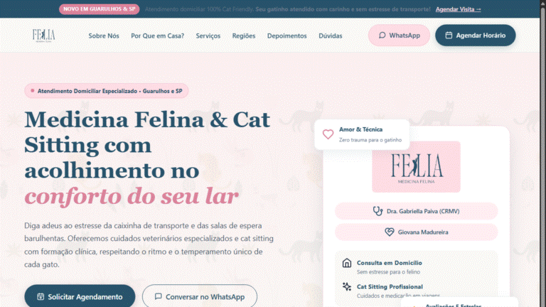
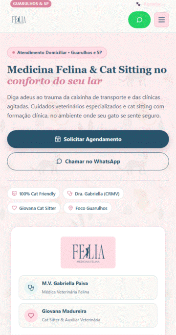

Gravações de Navegação do Website
Arquivos animados em alta resolução para enviar à Giovana e à Gabriella no WhatsApp ou visualizar em qualquer dispositivo.
Arquivos animados em alta resolução para enviar à Giovana e à Gabriella no WhatsApp ou visualizar em qualquer dispositivo.

